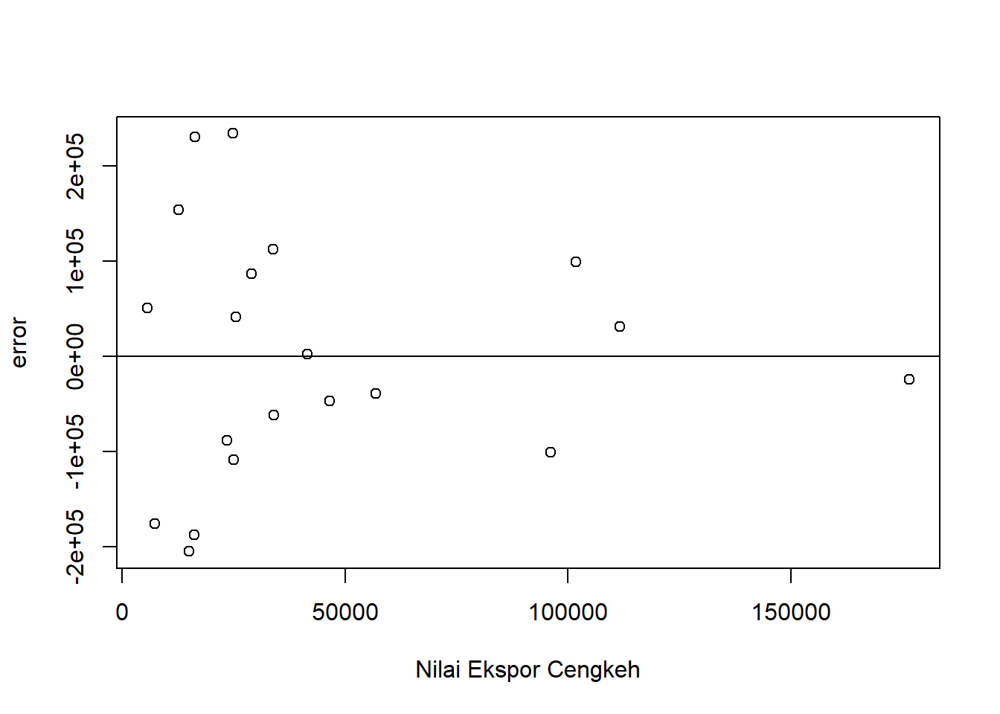

setwd("D:/METOPEL UAS/MAWAR METOPEL")
library(readxl)
library(tidyverse)
library(kableExtra)Pengaruh Ekspor Cengkeh terhadap kinerja Ekspor Komoditas Tembakau Indonesia.
Metode Penelitian Politeknik APP Jakarta

1 Pendahuluan
1.1 Latar belakang
Indonesia, dengan reputasinya sebagai produsen dan eksportir utama komoditas cengkeh dan tembakau, memegang peran strategis dalam perekonomian global kedua komoditas tersebut. Menariknya, ekspor dari kedua komoditas ini mungkin memiliki keterkaitan satu sama lain. Misalnya, fluktuasi dalam ekspor cengkeh dapat berdampak pada kinerja ekspor tembakau, dan sebaliknya.
Dalam konteks ini, penelitian ini dirancang untuk menjelajahi dan memahami bagaimana ekspor cengkeh mempengaruhi kinerja ekspor tembakau di Indonesia. Untuk mencapai tujuan ini, penelitian ini akan menggunakan metode regresi multivariat. Dalam kerangka kerja ini, kinerja ekspor tembakau akan dianggap sebagai variabel dependen, sementara ekspor cengkeh akan dianggap sebagai variabel independen.
Hasil dari penelitian ini diharapkan dapat memberikan wawasan baru tentang bagaimana dinamika ekspor cengkeh dan tembakau saling mempengaruhi. Selain itu, penelitian ini juga diharapkan dapat memberikan kontribusi penting bagi mahasiswa dan peneliti lainnya yang tertarik pada ekonomi pertanian dan perdagangan internasional. Dengan demikian, penelitian ini tidak hanya relevan dalam konteks akademis, tetapi juga dalam konteks praktis dan industri.
1.2 Ruang lingkup
Ruang lingkup penelitian ini mencakup:
Analisis Ekonomi: Penelitian ini melibatkan analisis ekonomi terhadap pengaruh ekspor komoditas cengkeh terhadap kinerja ekspor komoditas tembakau di Indonesia.
Fokus pada Komoditas Cengkeh dan Tembakau: Penelitian ini berfokus pada dua komoditas penting dalam ekonomi Indonesia, yaitu cengkeh dan tembakau. Kedua komoditas ini dipilih karena pentingnya dalam perekonomian Indonesia dan potensi interaksi antara ekspor kedua komoditas ini.
Metode Regresi Multivariat: Penelitian ini menggunakan metode regresi multivariat untuk menganalisis data. Metode ini memungkinkan peneliti untuk menganalisis pengaruh beberapa variabel independen terhadap variabel dependen.
Data Ekspor: Penelitian ini menggunakan data ekspor komoditas cengkeh dan tembakau. Data ini diperoleh dari sumber yang dapat dipercaya dan digunakan untuk melakukan analisis regresi.
Pengaruh Ekspor Cengkeh terhadap Ekspor Tembakau: Tujuan utama penelitian ini adalah untuk menganalisis bagaimana ekspor cengkeh mempengaruhi kinerja ekspor tembakau. Ini melibatkan analisis hubungan antara variabel-variabel ini dan interpretasi hasilnya.
Relevansi Akademik dan Industri: Meskipun penelitian ini bersifat akademik, hasilnya juga memiliki relevansi bagi industri. Hasil penelitian ini dapat membantu pemangku kepentingan industri dalam membuat keputusan yang berinformasi dan strategis.
1.3 Rumusan masalah
Berikut adalah rumusan masalah yang relevan dengan penelitian ini:
- Bagaimana pengaruh ekspor komoditas cengkeh terhadap kinerja ekspor komoditas tembakau di Indonesia?
- Apakah ada hubungan signifikan antara ekspor komoditas cengkeh dan kinerja ekspor komoditas tembakau di Indonesia?
- Bagaimana menerapkan metode regresi multivariat dalam analisis data ekonomi ini?
- Bagaimana hasil analisis ini dapat memberikan pemahaman yang lebih baik kepada mahasiswa tentang dinamika ekspor komoditas cengkeh dan tembakau dan hubungan antara keduanya?
1.4 Tujuan dan manfaat penelitian
Berikut adalah tujuan dan manfaat dari penelitian ini:
Tujuan: 1. Untuk menganalisis pengaruh ekspor komoditas cengkeh terhadap kinerja ekspor komoditas tembakau di Indonesia. 2. Untuk memahami hubungan antara ekspor komoditas cengkeh dan kinerja ekspor komoditas tembakau. 3. Untuk memahami bagaimana menerapkan metode regresi multivariat dalam analisis data ekonomi.
Manfaat: 1. Hasil penelitian ini dapat memberikan pemahaman yang lebih baik kepada mahasiswa tentang dinamika ekspor komoditas cengkeh dan tembakau dan hubungan antara keduanya. 2. Penelitian ini juga dapat menjadi referensi bagi penelitian lain yang berkaitan dengan ekonomi pertanian, khususnya yang berkaitan dengan ekspor komoditas. 3. Hasil penelitian ini juga dapat digunakan sebagai bahan ajar atau materi diskusi di kelas yang berkaitan dengan ekonomi pertanian atau bisnis internasional.
1.5 Package
2 Studi pustaka
Berikut adalah beberapa studi pustaka yang relevan dengan penelitian ini:
1. Analisis Pengembangan Ekspor Cengkeh Indonesia Menurut Ely Nurhayati, Sri Hartoyo, dan Sri Mulatsih (2018), ekspor cengkeh Indonesia memiliki potensi yang besar untuk dikembangkan. Mereka menemukan bahwa pasar yang paling optimis untuk dikembangkan adalah Pakistan, Jerman, Italia dan Amerika.
2. Daya Saing Ekspor Cengkeh Indonesia Menurut Mirfatul Hidayah, Anna Fariyanti, dan Lukytawati Anggraeni, ekspor cengkeh memiliki dampak positif terhadap perekonomian Indonesia dan memiliki daya saing yang kuat di pasar internasional.
3. Analisis Kinerja Ekspor Menurut Ibrahim Rachman (2017), kinerja ekspor total Indonesia sejak tahun 2007 hingga 2016 terus mengalami fluktuasi. Hal ini menunjukkan bahwa ada faktor-faktor tertentu yang mempengaruhi kinerja ekspor.
4. Memahami Analisis Regresi Multivariate Menurut MobileStatistik.Com (2018), regresi multivariate merupakan suatu model regresi yang menyatakan hubungan kausal di antara beberapa variabel tak bebas dan sekumpulan variabel bebas yang serupa.
5. Analisis Regresi Multivariat Berdasarkan Faktor-Faktor yang Mempengaruhi Derajat Kesehatan Menurut Salmon N. Aulele, A. Z. Wattimena, dan Christy Tahya (2017), meskipun penelitian mereka berfokus pada derajat kesehatan, metode analisis yang digunakan, yaitu regresi multivariat, relevan dan dapat diterapkan dalam penelitian ini.
3 Metode penelitian
3.1 Data
| tahun | cengkeh | tembakau | kurs |
|---|---|---|---|
| 2003 | 24929 | 140192 | Rp 8.465,00 |
| 2004 | 16037 | 156947 | Rp 9.290,00 |
| 2005 | 14916 | 200326 | Rp 9.830,00 |
| 2006 | 23533 | 223199 | Rp 9.020,00 |
| 2007 | 33952 | 290955 | Rp 9.419,00 |
| 2008 | 7251 | 357781 | Rp 10.950,00 |
| 2009 | 5586 | 410490 | Rp 9.400,00 |
| 2010 | 12581 | 465082 | Rp 8.991,00 |
| 2011 | 16304 | 549766 | Rp 9.068,00 |
| 2012 | 24767 | 617831 | Rp 9.670,00 |
| 2013 | 25399 | 708141 | Rp 12.189,00 |
| 2014 | 33834 | 804714 | Rp 12.440,00 |
| 2015 | 46484 | 793317 | Rp 13.795,00 |
| 2016 | 41569 | 803902 | Rp 13.436,00 |
| 2017 | 28928 | 904680 | Rp 13.548,00 |
| 2018 | 101746 | 931637 | Rp 13.892,12 |
| 2019 | 111537 | 900054 | Rp 14.244,98 |
| 2020 | 176541 | 864410 | Rp 14.606,80 |
| 2021 | 96054 | 855509 | Rp 14.977,81 |
| 2022 | 56909 | 973334 | Rp 15.358,25 |
Penelitian ini berfokus pada analisis pengaruh ekspor komoditas cengkeh terhadap kinerja ekspor komoditas tembakau di Indonesia. Metode yang digunakan dalam penelitian ini adalah regresi multivariat, yang memungkinkan analisis hubungan antara satu variabel dependen dengan beberapa variabel independen. Dalam konteks penelitian ini, kinerja ekspor tembakau dijadikan sebagai variabel dependen, sementara ekspor cengkeh dijadikan sebagai variabel independen.
3.2 Metode analisis
Model analisis yang akan digunakan dalam penelitian ini adalah regresi multivariat. Dalam model ini, variabel dependen (Y) adalah kinerja ekspor tembakau, sedangkan variabel independen (X) adalah ekspor cengkeh. Model regresi multivariat dapat ditulis sebagai berikut:
\[Y = \beta_0 + \beta_1X_1 + \beta_2X_2 + \epsilon\]
di mana: - \(Y\) adalah kinerja ekspor tembakau - \(\beta_0\) adalah konstanta - \(\beta_1\) adalah koefisien regresi untuk ekspor cengkeh - \(X_1\) adalah ekspor cengkeh - \(\beta_2\) adalah koefisien regresi untuk kurs - \(X_2\) adalah kurs - \(\epsilon\) adalah galat atau kesalahan pengukuran
Dengan model ini, kita dapat menganalisis pengaruh ekspor cengkeh dan kurs terhadap kinerja ekspor tembakau. Dengan menggunakan metode ini, kita dapat mengetahui sejauh mana variabel-variabel independen mempengaruhi variabel dependen. Selain itu, kita juga dapat mengetahui arah hubungan antara variabel-variabel tersebut, apakah positif atau negatif.
4 Pembahasan
4.1 Pembahasan masalah
Plot dan Data
#impor dataset
read_excel("cengkeh.xlsx")# A tibble: 20 × 4
tahun cengkeh tembakau kurs
<dbl> <dbl> <dbl> <dbl>
1 2003 24929 140192 8465
2 2004 16037 156947 9290
3 2005 14916 200326 9830
4 2006 23533 223199 9020
5 2007 33952 290955 9419
6 2008 7251 357781 10950
7 2009 5586 410490 9400
8 2010 12581 465082 8991
9 2011 16304 549766 9068
10 2012 24767 617831 9670
11 2013 25399 708141 12189
12 2014 33834 804714 12440
13 2015 46484 793317 13795
14 2016 41569 803902 13436
15 2017 28928 904680 13548
16 2018 101746 931637 13892.
17 2019 111537 900054 14245.
18 2020 176541 864410 14607.
19 2021 96054 855509 14978.
20 2022 56909 973334 15358.dat <- read_excel("cengkeh.xlsx")
kbl(dat) %>%
kable_styling(bootstrap_options = c("striped", "hover", "condensed", "responsive"))| tahun | cengkeh | tembakau | kurs |
|---|---|---|---|
| 2003 | 24929 | 140192 | 8465.00 |
| 2004 | 16037 | 156947 | 9290.00 |
| 2005 | 14916 | 200326 | 9830.00 |
| 2006 | 23533 | 223199 | 9020.00 |
| 2007 | 33952 | 290955 | 9419.00 |
| 2008 | 7251 | 357781 | 10950.00 |
| 2009 | 5586 | 410490 | 9400.00 |
| 2010 | 12581 | 465082 | 8991.00 |
| 2011 | 16304 | 549766 | 9068.00 |
| 2012 | 24767 | 617831 | 9670.00 |
| 2013 | 25399 | 708141 | 12189.00 |
| 2014 | 33834 | 804714 | 12440.00 |
| 2015 | 46484 | 793317 | 13795.00 |
| 2016 | 41569 | 803902 | 13436.00 |
| 2017 | 28928 | 904680 | 13548.00 |
| 2018 | 101746 | 931637 | 13892.12 |
| 2019 | 111537 | 900054 | 14244.98 |
| 2020 | 176541 | 864410 | 14606.80 |
| 2021 | 96054 | 855509 | 14977.81 |
| 2022 | 56909 | 973334 | 15358.25 |
reg1<-lm(tembakau~cengkeh+kurs,data=dat)plot(dat$tahun,dat$tembakau,xlab="Tahun",ylab="Nilai FOB Ekspor Tembakau")plot(dat$tahun,dat$cengkeh,xlab="Tahun",ylab="Nilai FOB Ekspor Cengkeh")plot(dat$tahun,dat$kurs,xlab="Tahun",ylab="Nilai Tukar USD/IDR")dat$m<-resid(reg1)
plot(dat$tembakau,dat$m,xlab="Nilai Ekspor Tembakau",ylab="error")
abline(h=0) # membuat garis horizontal di y=0dat$m<-resid(reg1)
plot(dat$cengkeh,dat$m,xlab="Nilai Ekspor Cengkeh",ylab="error")
abline(h=0) # membuat garis horizontal di y=0
dat$m<-resid(reg1)
plot(dat$kurs,dat$m,xlab="Nilai Tukar Mata Uang",ylab="error")
abline(h=0) # membuat garis horizontal di y=0summary(reg1)
Call:
lm(formula = tembakau ~ cengkeh + kurs, data = dat)
Residuals:
Min 1Q Median 3Q Max
-205045 -91571 -10953 89311 233703
Coefficients:
Estimate Std. Error t value Pr(>|t|)
(Intercept) -6.942e+05 1.849e+05 -3.754 0.00158 **
cengkeh -3.315e-01 1.008e+00 -0.329 0.74630
kurs 1.124e+02 1.821e+01 6.170 1.03e-05 ***
---
Signif. codes: 0 '***' 0.001 '**' 0.01 '*' 0.05 '.' 0.1 ' ' 1
Residual standard error: 135500 on 17 degrees of freedom
Multiple R-squared: 0.8073, Adjusted R-squared: 0.7846
F-statistic: 35.6 on 2 and 17 DF, p-value: 8.357e-07Hasil analisis regresi multivariat menunjukkan bahwa model yang dibuat cukup baik dalam menjelaskan variabilitas dalam data, dengan nilai R-squared sebesar 0,8073. Artinya, sekitar 80,73% variasi dalam kinerja ekspor tembakau dapat dijelaskan oleh variabel-variabel dalam model.
Berikut adalah interpretasi koefisien regresi:
Intercept: Koefisien intercept bernilai -6,942 dan signifikan. Ini berarti jika semua variabel independen bernilai nol, maka kinerja ekspor tembakau akan berkurang sebesar 6,942 unit.
Ekspor Cengkeh: Koefisien ekspor cengkeh bernilai -3,315 dan tidak signifikan. Ini berarti ekspor cengkeh tidak memiliki pengaruh yang signifikan terhadap kinerja ekspor tembakau.
Kurs: Koefisien kurs bernilai 1,124 dan sangat signifikan. Ini berarti jika kurs meningkat sebesar satu unit, maka kinerja ekspor tembakau akan meningkat sebesar 1,124 unit, asumsi variabel lain tetap.
Dengan demikian, variabel kurs memiliki pengaruh yang signifikan terhadap kinerja ekspor tembakau, sedangkan ekspor cengkeh tidak memiliki pengaruh yang signifikan. Ini menunjukkan bahwa peningkatan kurs dapat meningkatkan kinerja ekspor tembakau Indonesia. Hasil ini memberikan wawasan penting bagi mahasiswa dan peneliti lainnya yang tertarik pada dinamika ekspor komoditas cengkeh dan tembakau dan hubungan antara keduanya. Namun, perlu diingat bahwa hasil ini didasarkan pada data time series dari tahun 2002 hingga 2005, dan mungkin berbeda jika menggunakan data dari periode waktu yang berbeda atau variabel tambahan.
4.2 Kesimpulan
Berdasarkan hasil analisis regresi multivariat, berikut adalah kesimpulan yang dapat diambil:
Kurs: Kurs memiliki pengaruh positif yang sangat signifikan terhadap kinerja ekspor tembakau. Hal ini mungkin disebabkan oleh fakta bahwa peningkatan kurs (misalnya, penurunan nilai rupiah terhadap dolar AS) dapat meningkatkan nilai ekspor dalam rupiah.
Ekspor Cengkeh: Ekspor cengkeh tidak memiliki pengaruh yang signifikan terhadap kinerja ekspor tembakau. Hal ini mungkin karena ekspor cengkeh dan tembakau mungkin tidak memiliki hubungan langsung atau mungkin ada faktor lain yang mempengaruhi kinerja ekspor tembakau yang tidak dimasukkan dalam model ini.
Dengan demikian, hasil analisis ini dapat menjawab rumusan masalah yang diajukan dalam penelitian ini. Meskipun ekspor cengkeh tidak memiliki pengaruh yang signifikan terhadap kinerja ekspor tembakau, peningkatan kurs dapat meningkatkan kinerja ekspor tembakau Indonesia. Hasil ini memberikan wawasan penting bagi mahasiswa dan peneliti lainnya yang tertarik pada dinamika ekspor komoditas cengkeh dan tembakau dan hubungan antara keduanya. Namun, perlu diingat bahwa hasil ini didasarkan pada data time series dari tahun 2002 hingga 2005, dan mungkin berbeda jika menggunakan data dari periode waktu yang berbeda atau variabel tambahan. Selain itu, penelitian lebih lanjut mungkin diperlukan untuk memahami mengapa ekspor cengkeh tidak memiliki pengaruh yang signifikan terhadap kinerja ekspor tembakau.
5 Referensi
Ely Nurhayati, Sri Hartoyo, Sri Mulatsih. (2018). Analisis Pengembangan Ekspor Cengkeh Indonesia. Jurnal Ekonomi dan Kebijakan Pembangunan.
Mirfatul Hidayah, Anna Fariyanti, Lukytawati Anggraeni. Daya Saing Ekspor Cengkeh Indonesia. Jurnal Ekonomi Pertanian dan Agribisnis.
Ibrahim Rachman. (2017). Analisis Kinerja Ekspor. Jurnal Manajemen dan Agribisnis.
MobileStatistik.Com. (2018). Memahami Analisis Regresi Multivariate.
Salmon N. Aulele, A. Z. Wattimena, Christy Tahya. (2017). Analisis Regresi Multivariat Berdasarkan Faktor-Faktor yang Mempengaruhi Derajat Kesehatan. Jurnal Ilmu Matematika dan Terapan.